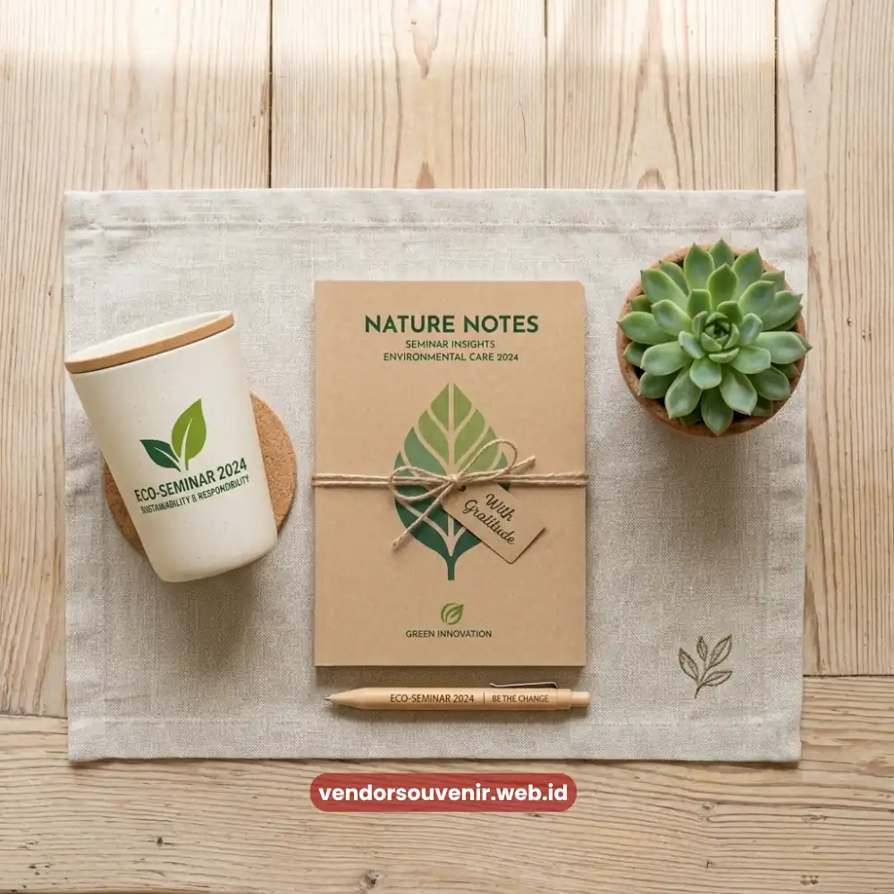
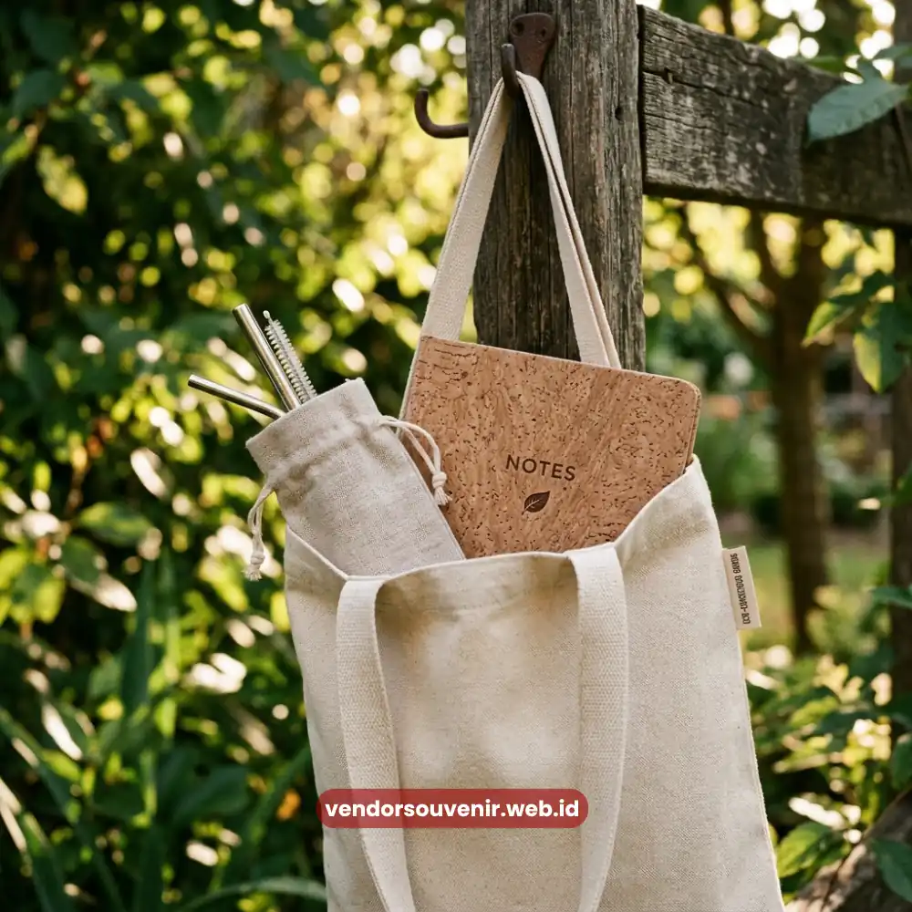

Daftar Isi
Souvenir seminar ramah lingkungan adalah cendera mata yang diproduksi dari bahan berkelanjutan seperti kanvas, stainless steel, bambu, atau kertas daur ulang.
Tujuan utamanya adalah mengurangi dampak lingkungan sekaligus tetap fungsional bagi penerimanya.
Tren ini berkembang seiring meningkatnya kesadaran perusahaan dan instansi terhadap isu keberlanjutan.
Pemilihan souvenir kini tidak hanya mempertimbangkan estetika, tetapi juga jejak lingkungan yang ditinggalkan produk tersebut setelah digunakan.
- Souvenir ramah lingkungan mencerminkan komitmen perusahaan terhadap isu keberlanjutan.
- Bahan seperti kanvas, bambu, dan stainless steel menjadi pilihan populer karena daya tahan dan dampak lingkungannya yang lebih rendah.
- Souvenir berkelanjutan dapat memperkuat citra positif perusahaan di mata peserta dan publik.
- Pemilihan produk ramah lingkungan tidak selalu berarti mengorbankan fungsi atau desain.
Mengapa Isu Lingkungan Kini Memengaruhi Pemilihan Souvenir Seminar
Kesadaran terhadap dampak lingkungan dari produk sekali pakai terus meningkat, termasuk dalam industri penyelenggaraan acara.
Survei konsumen di beberapa negara Asia Tenggara pada 2024 mencatat pandangan positif terhadap perusahaan yang mendukung ekosistem.
Sebagian besar responden cenderung memandang positif perusahaan yang secara konsisten menggunakan produk ramah lingkungan dalam kegiatan operasional maupun acaranya.
Kondisi ini menjadikan pemilihan souvenir ramah lingkungan bukan sekadar tren sesaat, melainkan bagian dari strategi citra jangka panjang.
Selain aspek citra, souvenir ramah lingkungan juga cenderung memiliki usia pakai lebih panjang dibandingkan produk sekali pakai.
Hal ini secara tidak langsung memperpanjang durasi paparan brand penyelenggara di kehidupan sehari-hari penerimanya.
Jenis Bahan yang Umum Digunakan untuk Souvenir Berkelanjutan
Apa saja bahan yang biasa digunakan dalam souvenir ramah lingkungan? Kanvas menjadi pilihan populer untuk tas dan pouch.
Kanvas memiliki daya tahan tinggi serta dapat digunakan berulang kali menggantikan kantong plastik sekali pakai.
Stainless steel banyak digunakan untuk tumbler dan botol minum karena tahan lama dan dapat mengurangi konsumsi botol plastik.
Bambu sering dipilih untuk alat tulis atau peralatan makan karena sifatnya yang mudah terurai secara alami.
Sementara kertas daur ulang umum digunakan untuk notebook dan kemasan souvenir untuk mendukung konsep go-green.
Setiap bahan memiliki karakteristik dan tingkat perawatan yang berbeda, sehingga pemilihannya perlu disesuaikan dengan fungsi souvenir dan profil peserta seminar.

Tote Bag Kanvas sebagai Alternatif Kantong Plastik
Bagaimana Menjaga Kesan Premium pada Souvenir Ramah Lingkungan
Salah satu kekhawatiran umum penyelenggara acara adalah anggapan bahwa produk ramah lingkungan identik dengan tampilan sederhana atau kurang menarik.
Padahal, dengan sentuhan desain yang tepat, produk berbahan alami seperti kanvas atau bambu justru dapat menghadirkan kesan elegan dan autentik.
Tampilan ini seringkali jauh lebih berkelas dan berbeda dari souvenir plastik massal pada umumnya.
Kombinasi warna natural, finishing rapi, dan personalisasi logo yang presisi mampu mengangkat kesan premium tanpa menghilangkan aspek keberlanjutan produk.
Kemasan juga memegang peran penting dalam menyempurnakan kesan ramah lingkungan secara menyeluruh.
Penggunaan kemasan berbahan kertas daur ulang atau kotak tanpa laminasi plastik dapat memperkuat konsistensi pesan keberlanjutan perusahaan.
Manfaat Jangka Panjang Memilih Souvenir Ramah Lingkungan
Selain manfaat lingkungan, souvenir berkelanjutan turut memberikan nilai tambah berupa diferensiasi citra yang kuat di mata peserta.
Hal ini sangat menonjol di tengah banyaknya penyelenggara acara yang masih menggunakan souvenir konvensional sekali pakai.
Perusahaan atau instansi yang konsisten menghadirkan souvenir ramah lingkungan berpeluang lebih diingat sebagai organisasi yang progresif.
Kepedulian terhadap isu global ini menjadi sebuah nilai yang semakin relevan di mata generasi pekerja masa kini.

Wujudkan Seminar yang Lebih Ramah Lingkungan!
Tim kami siap membantu Anda menyusun paket seminar eksklusif berbasis bahan eco-friendly.
Bangun citra positif perusahaan Anda melalui merchandise berkualitas yang mendukung kelestarian alam.
Dapatkan katalog produk eco-friendly kami secara gratis!
FAQ Seputar Souvenir Seminar Ramah Lingkungan
Apa contoh souvenir seminar ramah lingkungan yang populer?
Contohnya adalah tote bag kanvas, tumbler stainless steel, alat tulis bambu, dan notebook dari kertas daur ulang.
Apakah souvenir ramah lingkungan bisa tetap terlihat elegan?
Bisa, terutama dengan sentuhan desain natural, finishing rapi, dan personalisasi logo yang presisi pada produk berbahan alami.
Apakah souvenir ramah lingkungan lebih tahan lama dibanding souvenir biasa?
Umumnya ya, karena bahan seperti stainless steel dan kanvas memiliki daya tahan lebih tinggi dibandingkan produk plastik sekali pakai.
Dengan memilih souvenir ramah lingkungan, acara seminar Anda tidak hanya berkesan, tetapi juga berkontribusi positif bagi masa depan bumi.
Maroon Souvenir
Partner Corporate Gift terpercaya di Indonesia. Berpengalaman melayani ratusan perusahaan sejak 2018.
Lihat Portofolio Kami